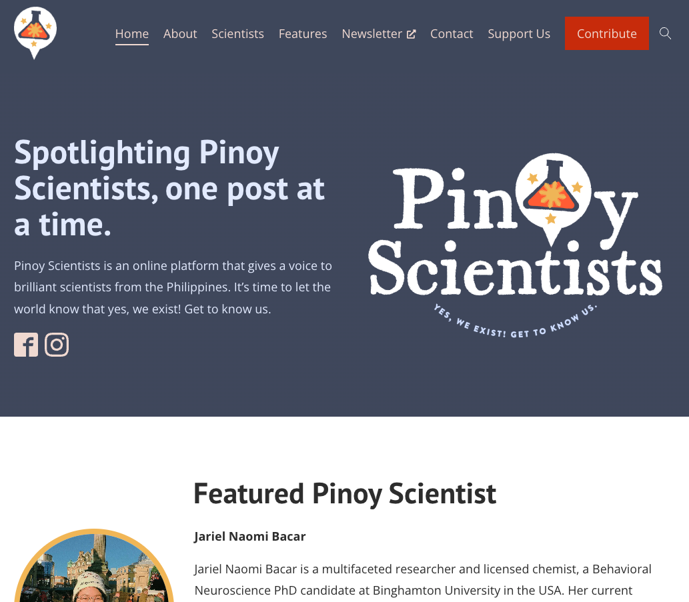

Digital platform
Pinoy Scientists Website
I proposed a dedicated website to give our featured scientists’ stories a life beyond their weekly social media takeovers. I also initiated a broader rebrand of Pinoy Scientists, which laid the foundation for a new website built around that identity. I shaped the site’s information architecture and led its content development, writing the copy across the website. Today, it is the first — and so far only — searchable resource for Filipino researchers worldwide, regularly used by students, media and fellow scientists to find relevant expertise.